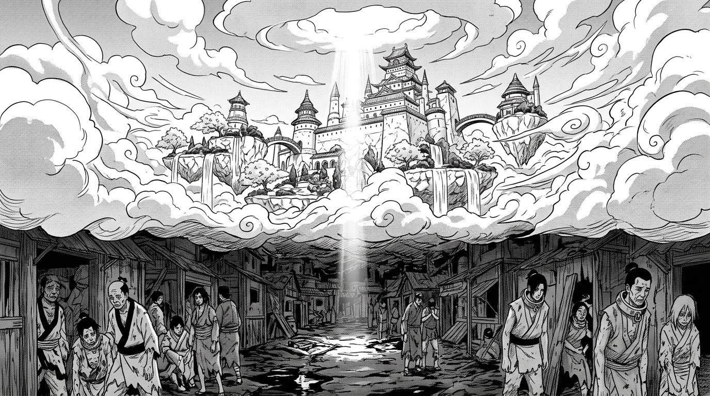

Два мира одного города

Если вы когда-нибудь увидите Аурумгард издалека, вы решите, что смотрите на мечту. Ослепительно белый замок из мрамора и золота парит в облаках, словно корона, надетая на само небо. Сады, где вода течёт вверх, вопреки всякой логике. Деревья, растущие из островов, висящих в воздухе. Мосты из чистого хрусталя, соединяющие башни, между которыми порхают птицы с оперением цвета заката.
Это Небесный Чертог — верхний город Аурумгарда, дом знати, которая искренне верит, что она произошла от звёзд.
Теперь опустите взгляд.
Прямо под парящим замком — земля, на которую никогда не падает солнечный свет. Замок закрывает его, как огромная каменная ладонь, простёртая над муравейником. Это Трущобы Теней: грязные улицы в вечных сумерках, покосившиеся лачуги, лужи гнилой воды. Люди здесь носят серые безликие лохмотья и тяжёлые металлические воротники — символ покорности магам Гравитации, способным одним жестом расплющить человека в лепёшку.
Аурумгардская знать одевается непрактично и роскошно. Платья и шлейфы мантий левитируют вокруг них — использование гравитационной магии ради чистой эстетики. Идеально чистые белые и золотые ткани, ни пятнышка, ни складки. С помощью магии Иллюзий они скрывают любые дефекты кожи, возрастные изменения, шрамы — всегда выглядят как ожившие мраморные статуи.
Их Королевская Гвардия — отдельный кошмар. Золотая пластинчатая броня, которая выглядит невыносимо тяжёлой — килограммов двести одного только металла, — но благодаря кольцам гравитации воины в ней порхают, как бабочки. На лицах — глухие шлемы без прорезей для глаз. Они ориентируются с помощью магии иллюзий и пространства, показывая, что смотреть на врага глазами — удел простолюдинов.
Аурумгард верит, что его знать — прямые потомки Звёзд. Первый метеорит упал с неба, значит, небесная сила принадлежит тем, кто ближе к небу. А кто ближе к небу, чем парящий замок? Это не религия в классическом смысле — это убеждённость в собственном божественном праве, настолько глубокая, что звучит искренне.
Бедняки внизу тоже верят. У них нет выбора. Когда твой господин может увеличить твой вес в пятьдесят раз одним щелчком пальцев — вера приходит быстро.
Между верхним городом и нижним есть подъёмник — единственный способ подняться. Он работает раз в день. Поднимает объедки, спускает приказы. И каждый день жители Трущоб смотрят вверх, на золотой блеск, пробивающийся сквозь облака, и думают одну и ту же мысль.
Когда-нибудь.